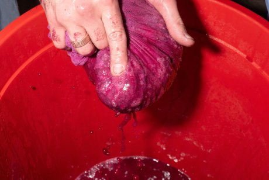
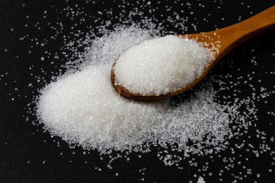
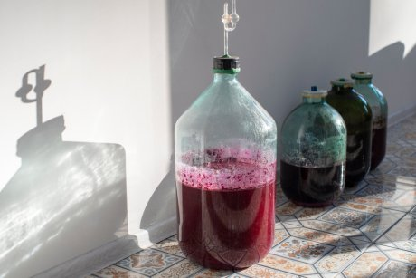
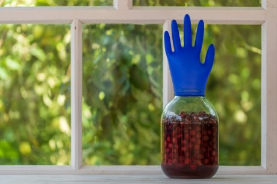
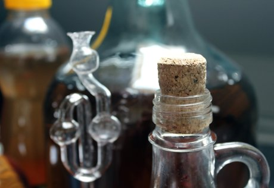

shutterstock.com/KarinaKlachuk/ Редакция Ogorod.ru
У домашнего вина ряд преимуществ перед напитком промышленного производства. Вы можете сами подобрать сырье, проконтролировать крепость и сладость напитка. А если вдруг к вам нагрянули гости, то не понадобится тратить время и деньги на поход в магазин.
Но есть и обратная сторона: домашнее вино иногда может получиться невкусным или вообще стать уксусом. У новичка это может надолго отбить охоту повторить печальный опыт виноделия. А, между тем, причина подобного винно-уксусного "квеста" часто кроется в одной из элементарных ошибок. И важно определить, где именно вы ошиблись, чтобы не повторяться в будущем. Для тех, кто впервые решил попробовать себя в качестве домашнего винодела, мы подготовили несколько практических советов по этой теме.
Вино получают в результате брожения напитков, в составе которых есть сахар. Брожение обеспечивают дрожжи – как промышленные, так и обитающие на поверхности немытых плодов натуральные (дикие). И первые, и вторые перерабатывают сахар в виноматериале на этанол (алкоголь) и углекислый газ (углекислоту). Для вывода газа из напитка на емкость надевают специальное устройство (гидрозатвор) либо проколотую тонкой иглой пластмассовую крышку или медицинскую перчатку. Это позволяет стравливать излишки углекислого газа и одновременно исключает контакт зреющего вина с кислородом и микроорганизмами воздуха, поскольку отверстия от иглы достаточно мелкие. Но если на одном из этапов приготовления вина воздух в большом количестве все же проникнет внутрь, то жидкость начинает постепенно окисляться за счет роста уксуснокислых бактерий, которые также в ней присутствуют. Со временем это приведет к превращению вина в уксус.
Совет 1. Правильно "работайте" с плодами

Фото с сайта shutterstock.com/Donenko Oleksii
Начинайте с самых простых и проверенных рецептов приготовления с минимумом компонентов – фрукты (ягоды), вода и сахар. При нарушении технологии уксусом может стать напиток из любого плодового сырья, но в особую "группу риска", по словам специалистов, попадают яблоки и виноград. Поэтому свой путь в домашнем виноделии лучше начинать с приготовления вина из более "надежных" плодов, например, вишни, черешни, малины и клубники.
Если рецепт не предполагает добавления винных дрожжей промышленного производства (а новичку лучше использовать именно такой), то плоды для вина обычно не моют, чтобы не уничтожить содержащиеся на их поверхности дикие дрожжи. То же самое касается и изюма, который усиливает эффект "работы" дрожжей, но в рецептуре присутствует не всегда.
Чтобы ускорить процесс, плодовый материал часто переминают руками или растирают удобным кухонным инструментом. Этот этап тоже важен для полноценного брожения. Обычно в перетертую плодовую массу сразу же вливают воду, а вот сахар иногда добавляют позже. Если вы выбрали подобный рецепт, то с момента добавления воды и до момента добавления сахара сусло важно не передержать. Рекомендации о том, какое время и в каких условиях сусло должно бродить без сахара, обычно тоже указаны в рецепте.
Также важно как следует процедить жидкую основу до того, как она попадет в закрытую емкость. Обычно для этого используют сложенную в несколько слоев марлю или даже тканевый мешок. Плодовое сырье важно полностью отжать, а жмых выбросить, чтобы он не попал в сусло.
Совет 2. Добавляйте сахар вовремя

Фото с сайта shutterstock.com/Mehes Daniel
Некоторые опытные виноделы советуют добавлять сахар в сусло в несколько этапов, порционно. Но это означает открывать емкость со "зреющим" напитком далеко не один раз. А поскольку каждое открытие емкости ухудшает качество напитка и повышает риск роста уксуснокислых бактерий за счет доступа воздуха, то новичкам лучше все же добавить весь сахар в сусло единовременно и хорошо перемешать его до растворения. Более простой вариант – приготовить сироп из воды и сахара, чтобы он быстрее растворился в общей массе.
Напомним, что сахар не всегда добавляют в сусло вместе с водой, а иногда позже – уже после отжима фруктов или ягод. После того как все необходимые компоненты добавлены, а емкости для брожения наполнены будущим вином примерно на две трети, нужно со всей серьезностью подойти к установке на них затвора.
Совет 3. Надежно закрывайте посуду с виноматериалом

Фото с сайта shutterstock.com/VladKK
Самый лучший вариант – водяной затвор (гидрозатвор) промышленного производства. К нему прилагается инструкция по применению, и с ним, в отличие от самодельных устройств, не нужно производить никаких дополнительных манипуляций.
Но если гидрозатвора в вашем распоряжении нет, то придется использовать народное средство для герметичного закрытия емкостей – медицинскую перчатку. Предварительно ее нужно будет проколоть тонкой иглой на одном из пальцев. Количество проколов напрямую зависит от того, какой объем жидкости налит в посуду для брожения. Как правило, достаточно одного прокола на каждые 1-2 л. Но опытные специалисты все же рекомендуют дополнительно ориентироваться на давление внутри перчатки. Если она надулась так сильно, что вот-вот слетит с емкости, сделайте в перчатке еще один дополнительный прокол (обычно в перчатке прокалывают большой палец).
Медицинская перчатка обязательно должна быть новой! А после установки самодельного затвора его нужно закрепить при помощи резинки или веревки.
А о том, какое еще оборудование потребуется новичку-виноделу, у нас есть отдельная статья.
Совет 4. Ежедневно осматривайте емкости

Фото с сайта shutterstock.com/OlegD
К сожалению, для начинающего винодела даже точное выполнение перечисленных выше действий иногда не может гарантировать того, что все получится. На эффективность брожения влияют пропорции продуктов в виноматериале, а также условия, в которых зреет вино, например, температура в помещении. Чем она выше, тем быстрее и сильнее проходит брожение.
Поэтому если вы закрыли емкости резиновой перчаткой, а не гидрозатвором, то необходимо регулярно осматривать их и проверять, на месте ли ваши "крышки". Также осматривайте и сами перчатки: из-за переизбытка давления или контакта с содержащейся в напитке кислотой в ней могут непроизвольно образоваться дополнительные отверстия. В этом случае ее следует немедленно заменить, а напиток – проверить на предмет изменения цвета и появления кислотного запаха. Если подобных признаков нет, процесс приготовления вина можно продолжать.
"Сигналом" того, что у вас все получилось, будет выпадение осадка и прекращение брожения: вино перестанет пузыриться. После этого его обязательно нужно снять с осадка (то есть процедить через несколько слоев марли, можно даже не один раз), разлить в емкости для хранения и отправить в прохладное место для дозревания, учтя еще один важный нюанс.
Совет 5. Прочно закрывайте посуду после розлива готового вина

Фото с сайта shutterstock.com/pixeldreams.eu
Самое логичное, что приходит на ум, – это налить готовый напиток в винную стеклянную бутылку и закупорить "родной" пробкой. Но если это пробка, которую вы однажды уже доставали из бутылки при помощи штопора, то в ней остались отверстия, и они никуда не исчезли. Поэтому придется либо поискать совершенно новую пробку, либо разлить вино в бутылки с винтовыми крышками (и ими же закрыть эти бутылки). Еще один вариант для хранения вина – обычная стеклянная банка объемом 3 л, предварительно простерилизованная. Ее достаточно просто плотно закрыть горячей пластмассовой крышкой и поставить в холодильник.
Опытные виноделы советуют заполнять емкости для хранения готового вина доверху, чтобы максимально исключить контакт напитка с воздухом.
Если же вдруг вы обнаружили, что ваше вино все-таки превращается в уксус, не спешите отчаиваться. Он тоже пригодится в домашнем хозяйстве, а в плане полезности даже даст фору своему промышленному "собрату".